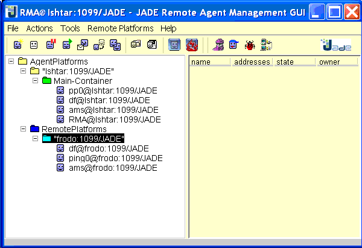
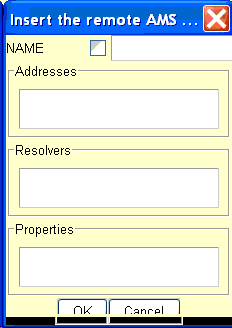
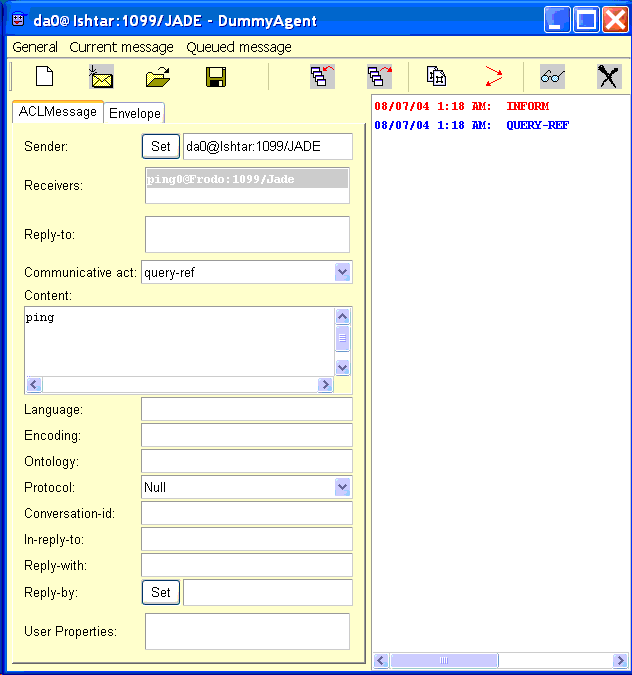

For communication among FIPA compliant platforms JADE provides support for two message transport protocols, IIOP and HTTP. The former was discussed in Tutorial 3. This tutorial deals with the HTTP MTP. Formally available only as an add-on, with the JADE 3.2 release the new version of the HTTP MTP is included with the main JADE distribution. In fact it is the default inter-platform MTP, displacing the IIOP MTP from that status.
Note that JADE 3.2 and this HTTP MTP assumes you have Java j2se 1.4.x or higher installed. (This version of Jade has a built-in SAX XML parser needed by the HTTP MTP. With j2se 1.2.x or j2se 1.3.x you may be able to get it running by addin a SAX parser on your class path. Apache provides several of these. I have not, however, tested this out.)
Since in JADE 3.2 the HTTP MTP is the default MTP, you need do nothing special to get it running. Just boot JADE in the normal way. On the console you get the usual JADE messages which will include something like this: http://Ishtar:7778/acc or http://jupiter.scs.ryerson.ca:7778/acc. 7778 is the default server port used by JADE for inter-platform communication.
When run as above, default settings are used. The new HTTP MTP allows you to change these for special purposes. For example,
With a proxy server, use these command line arguments:
You can also set the port for the socket used by the MTP (otherwise random):
This is useful with routers with port forwarding (see Example 2, below).
You can also put these settings in a configuration file and use JADE's -conf <fielname> command line argument to activate them. In this case the synatax is slightly different, for ecample, jade_http_mtp_outPort=<port number> on a line in the file.
By default the main container of a JADE platform runs its RMI server on port 1099 and its HTTP MTP on port 7778. In some environments you may want to change these settings. For examples, students may be doing assignments on a a mult-user system such as a Sun Sparc with many xTerms. These independent users would soon run into port clashes.
Chagning the RMI port is easy. Just use the -port command line argument. To change the MTP port you need to use the -mtp command line option, something like,
where the port chosen is not being used by anyone else.
For more information about these settings, see the JADE documentation for the HTTP MTP>
I tested my HTTP MTP connection on a LAN, on which there are two PCs named Frodo and Ishtar. Frodo is the remote machine and is running the old version of the HTTP MTP. On this platform the standard PingAgent is running. Ishtar, the local machine, runs the new version of the HTTP MTP. The machines are running separate JADE platforms (not one platform with a main and satellite container) so communication is iter-platform not intra-platform.
Of course it would be better to run the new HTTP MTP on both machines. In fact, with the setup described above you will get theis warning:
The example worked in spite of this warning.]
You can look at the setup using an RMA agent on,say, Ishtar. I get something like this:

To get this view choose the Remote Platforms menu item and then select "Add Platform via AMS AID". This window appears:

Fill in the name of the remote AMS agent, e.g., ams@Frodo:1099/Jade. (Do not click the checkbox which is for local names.)
To fill in the address, put the mouse cursor in the Address text field, and right click. In the window which pops up, fill in the address, e.g., http://Frodo:7778/acc. (7778 is the port chosen by default by the HTTP MTP.)
When you close all the pop up windows, you shoudl see new entries in your local RMA window. Under the line "Remote Platforms" you will see an entry like (in my case) Frodo:1099/Jade. But at first you will not see the agents on that platform. To see them, select the platform name and right click. From the pop up menu choose "Refresh". The names of the agents on the remote platfomr should appear.
Talk to the Remote Ping
Above you can see a pretty picture of the Jade platorms thanks to the RMA. This picture is useful for finding agents on remote platforms. In the image above we see that there is an agent on Frodo named ping0. I can ping it from Ishtar using DummyAgent supplied with JADE.
To successfully ping the standard JADE PingAgent you need to send it a message with Communicative Act query-ref, content, the string "ping" (entered on the DummyAgent without the quotes). The DummyAgent window looks like this after a message has been sent and received:

Note that to enter Receivers you need to right click on the field and then respond to the pop ups just as before. The address which is not shown in the DummyAgent window is, as before in my case, http:/Frodo:7778/acc/
The received message is shown in red. You can select it, and then click eyeglasses icon to see the properties of the reply received from the PingAgent. The content is "alive" which is correct.
I don't know how many have a setup similar to what I am about to describe, but hopefully some will find this experience interesting. As in Test 1, my local machine is Ishtar on a local LAN. This LAN uses the domain 192.168.1 which is special in that addresses beginning with 192.168 are not allowed to visible from the outside (i.e., the Internet). This LAN is connected to the Internet via a Linksys router. My service provider (ISP) provides an IP of 65.95.65.3 (at the momennt -- it chandes periodically).
The machine I want to talk to is at Ryerson University on a UNIX (Solaris) machine with name jupiter.scs.ryerson.ca, a fully Internet functional name. On this machine is running a JADE platform with a standard PingAgent in the main container.
The goal is to send the usual "ping" message from Ishtar on the LAN behind the rouoter to the PingAgent on jupiter, and get the standard "aliive" message back. It is easy enough to send the message. Getting the reply back needs some tweeking.
You can run the DummyAgent on Ishtar as in Test 1 above. The remote PingAgent is named ping0@jupiter.scs.ryerson.ca:1099/JADE at address http://jupiter.scs.ryerson.ca:7778/acc. The "ping" message will arrive but nothing comes back. The platform on jupiter will try to send the return message to http://Ishtar:7778/acc. This unfortunately does no have a domain part so it is not recognized as a valid address.
One try is to add the address http://65.95.65.3:7778/acc to the sender agent's (da0, the DummyAgent) list of addresses. (Click the Set button on the DummyAgent GUI, and add the address in the same manner as you did for the receiver.) Still no luck.
On my system I am using a Linksys router. The administrative program gives me two possibilities, both of which work. The first is the DMZ setting. This allows me to expose a chosen machine on the LAN to the Internet. So I expose Ishtar. If I do this, and then run a JADE platform with the DummyAgent in the way described in the above paragraph, I get the "alive" message back from the remote PingAgent. All is well. (It seems the order is important. You need to reboot JADE after changing the DMZ setting.)
The danger of using DMZ is precisely that it exposes the machine on the Internet, making it more vulnerable to attack. Fortunately there is a somewhat safer way.
My router also supports "Port Forwarding". I can set any port I like. Say I choose 7777. Then I run my platform on Ishtar with additional switch
Now all works fine and I have just exposed one port, not the hwole machine.
Instead of using DummhAgent, you might want to communicate from your own program on a machine behind a router. To do so you need to add a second return address to the message sender agent as in Test 2 above with the DummyAgent. To set the return adddress you might have some code lines like the following.
In my case the routerIP was 65.95.65.3.